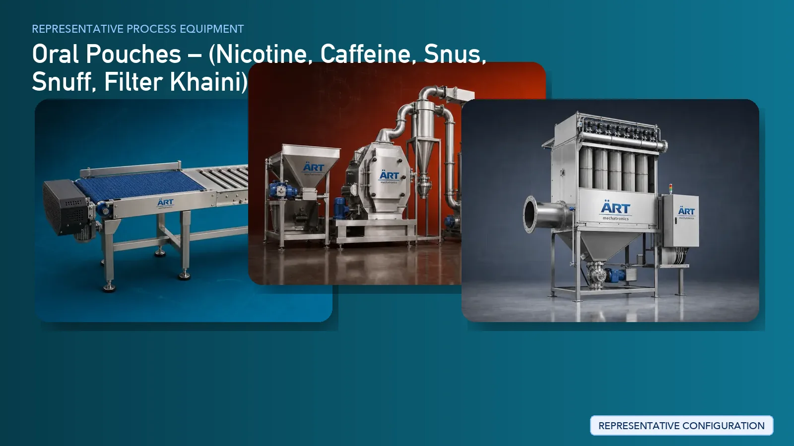

Oral Pouch Manufacturing Plant & Machinery (Nicotine, Caffeine, Snus, Snuff & Filter Khaini)
Oral pouches, including nicotine pouches, caffeine pouches, snus, snuff, and filter khaini, are rapidly growing product categories in the global FMCG and tobacco alternatives market.

About Oral Pouches processing
ART Mechatronics provides complete turnkey solutions for oral pouch manufacturing plants, offering advanced systems for blending, dosing, pouch forming, filling, sealing, and packaging. Our solutions are engineered for precision, hygiene, scalability, and compliance with modern manufacturing standards.
Complete Oral Pouch Process Flow
Base materials such as plant fibers, tobacco (if applicable), powders, sweeteners, and additives are received and prepared.
Ensures controlled and contamination-free handling.
Raw materials are processed into fine particles suitable for pouch filling.
Ensures uniform particle size for consistent product quality.
Ingredients are blended with flavors, sweeteners, active compounds, and binders.
Ensures:
- Homogeneous mixture
- Accurate ingredient distribution
- Consistent product formulation
The blended material is conditioned and prepared for precise dosing into pouches.
Ensures accurate weight per pouch.
Material is filled into small filter pouches and sealed using automated machines.
Performs:
- Pouch forming
- Precise filling
- Sealing and cutting
Pouches may be dried or stabilized to maintain shelf life and product consistency.
Final inspection ensures uniform weight, sealing quality, and product consistency.
Fine powders generated during processing are controlled. Systems Used:
Ensures:
- Cleanroom-like conditions
- Operator safety
- Product purity
Finished pouches are packed into containers or boxes.
Suitable for retail-ready packaging.
Machinery Required for Oral Pouch Manufacturing Plant
- Material Handling Systems
- Pulverizer / Grinder
- Fine Cutting Machine
- Ribbon Blender / Paddle Mixer
- Dosing System
- Conditioning Unit
- Pouch Forming, Filling & Sealing Machine
- Drying System (Optional)
- Inspection Systems / Check Weigher
- Dust Collection System
- Can Filling / Cartoning Machines
Turnkey Oral Pouch Plant Solutions
ART Mechatronics offers complete turnkey solutions for oral pouch manufacturing plants, including:
- Process design & plant layout
- Blending and formulation systems
- Pouch forming and packaging integration
- Dust control and air handling systems
- Automation & control panels
- Installation & commissioning
- After-sales support
We customize solutions based on:
- Product type (nicotine / caffeine / herbal / tobacco-based)
- Pouch size and weight
- Production capacity
- Level of automation
Why Choose Art Mechatronics
- Expertise in precision blending and dosing systems
- Advanced pouch forming and packaging integration
- Hygienic and controlled processing solutions
- Strong dust control and air filtration systems
- Custom-built machinery for FMCG and regulated products
- Global export capability
Machinery in a Oral Pouches plant
Where it's used
Get pricing & specs for the Oral Pouches plant
Share the product, target capacity, current process and plant location. These details help our engineers discuss the right machine or line configuration.
One partner, from design to start-up
ART Mechatronics designs, manufactures, installs and commissions your Oral Pouches solution with regional presence in India, UAE and Thailand.